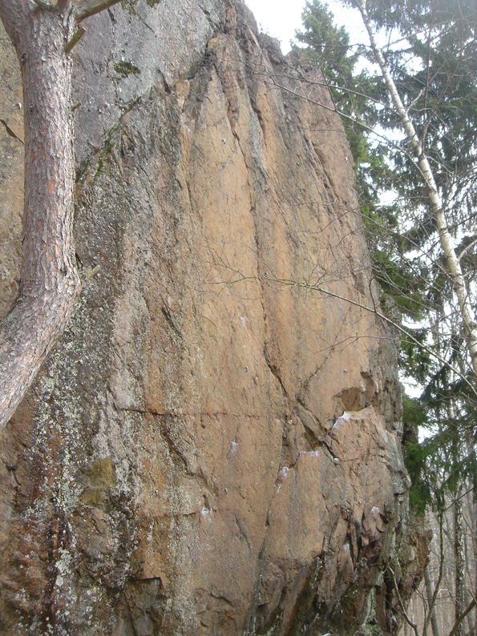

Lat: 59.21117 Long: 18.15954
__TOC__
Liten, brant klippa ca 1 km söder om Skogås pendeltågsstation. Den är 10-14 m hög och har ett antal ganska korta, men i vissa fall tämligen fina leder. En massa gamla militära befästningsverk bjuder på en del överraskningar. På grund av närhet till bostadsområdet så är platsen tyvärr ganska nedskräpad. Så farligt är det dock inte, men det är ingen höjdarklippa att ta med krypande barn eller hundar till på grund av en del krossat glas.
Sydvänd men delvis skuggig.
<div style="width: 355; float: right; margin-left: 10px; padding: 3px; border: solid 1px #cccccc;"> <googlemap width=300 height=200 lat="59.21117" lon="18.15954" zoom="13" type="map" controls="small"> 59.21117,18.15954,
Sjötorpsberget
</googlemap> </div> <div style="float: right; margin-left: 10px;"> <slresa> titel=Sjotorpsberget lat=18159540 long=59211170 </slresa> </div> Nynäsvägen till Skogås-avtaget och vidare mot Skogås. Ca 400 m efter järnvägen, ta h på Rapsodivägen och parkera på förgreningen till Rapsodivägen 272-378. Promenera vidare ner på förgreningen till gångvägen och v på denna.
Parkering på Rapsodivägen kan medföra parkeringsböter eftersom samfälligheten har infört att endast boende får parkera på dessa platser. Alternativ parkeringsplats är att istället för att åka in på Radsodivägen fortsätt rakt fram på Österleden. Kör tills den tar slut och parkera. Här slipper man alla förbudsskylter som det kryllar av i området. Gå ner till vattnet och gå trevligt promenadstråk åt höger.
Väl avstigen från pendeltåget i Skogås, promenera söderut längs järnvägen, igenom småhusområdet. Efter en brant backe kommer den asfalterade stigen ner på en smal grusväg. Klippan ligger ca 100 m åt v.
Förare finns på
.
Kategori:Stockholm
Kategori:Södra Södertörn
Kategori:Sport
Kategori:Trad